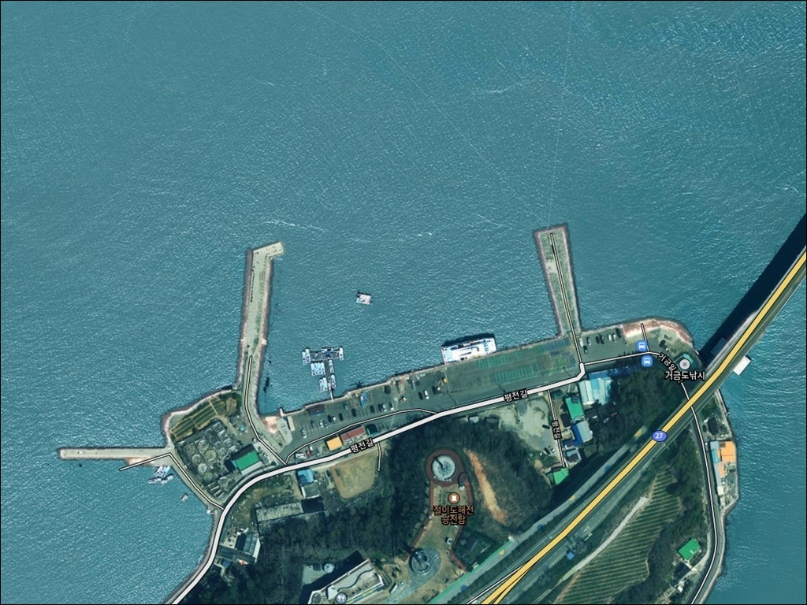
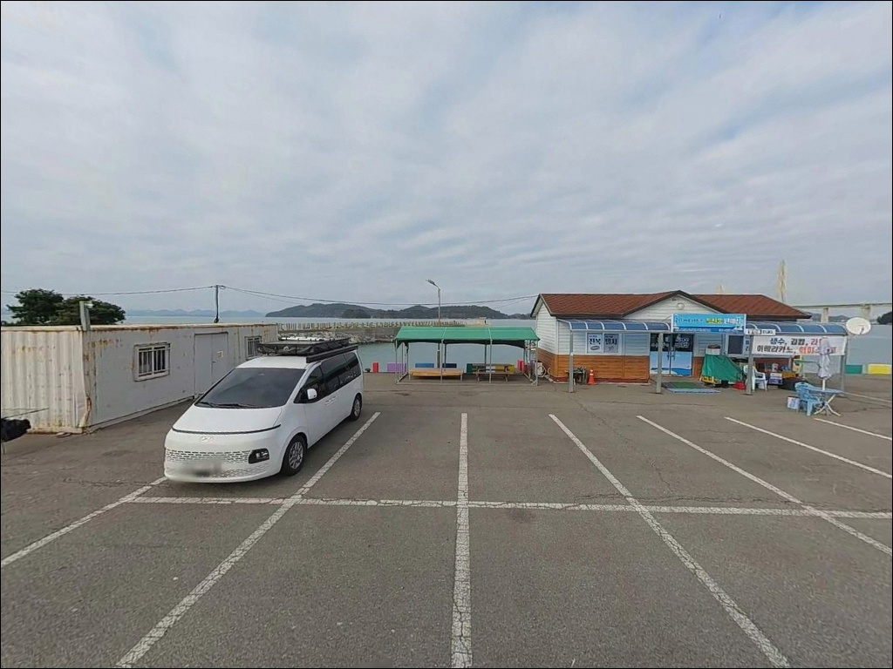
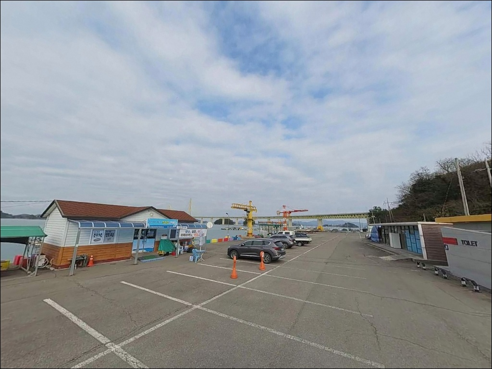
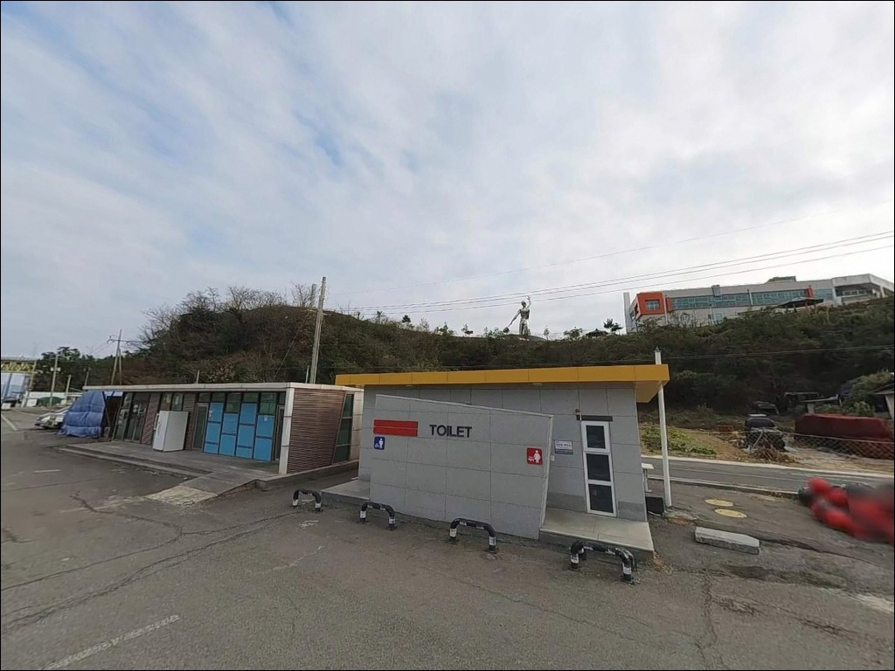
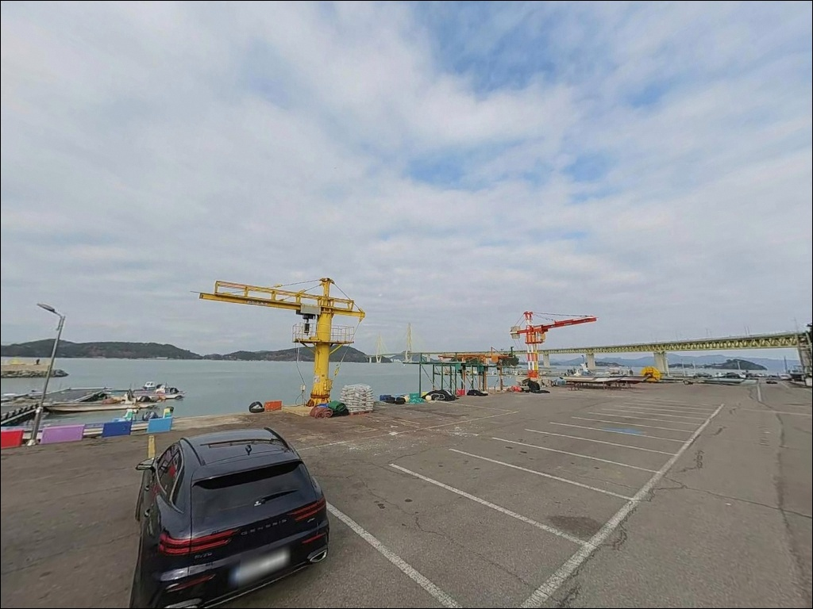
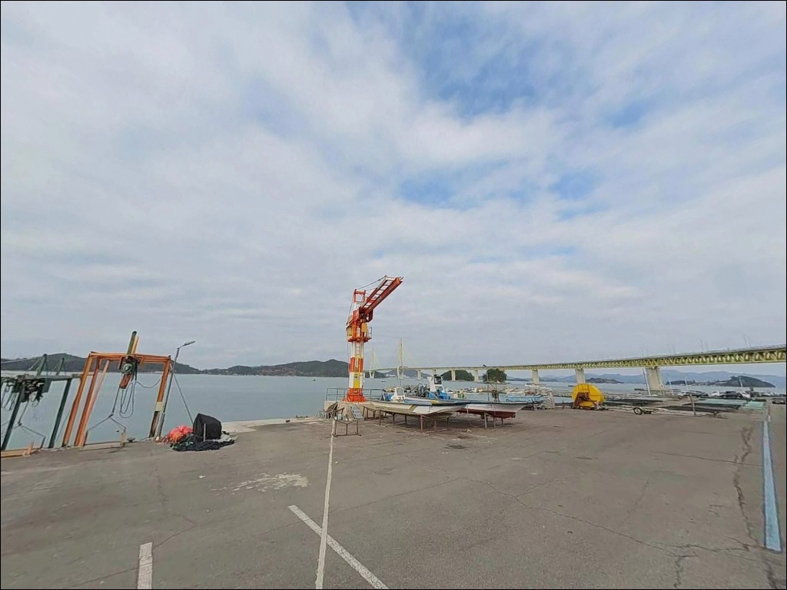
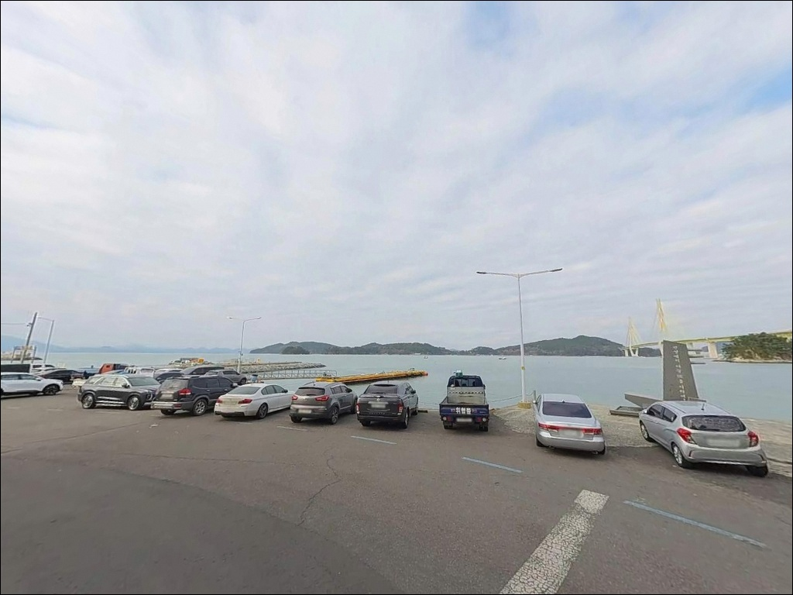
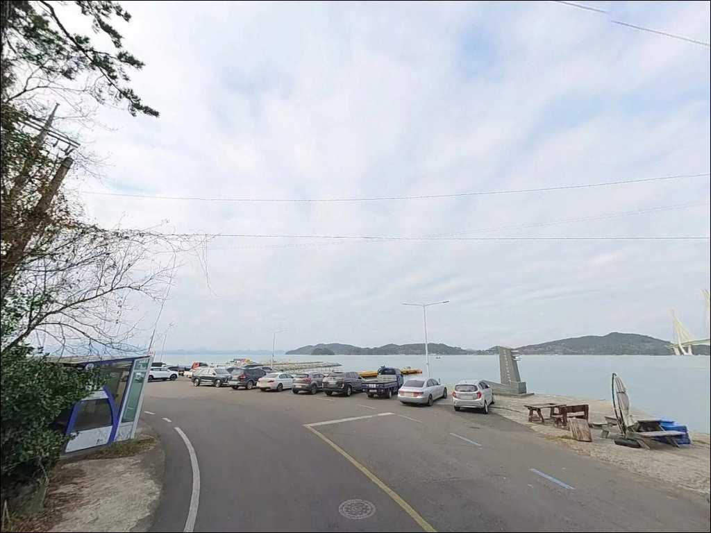
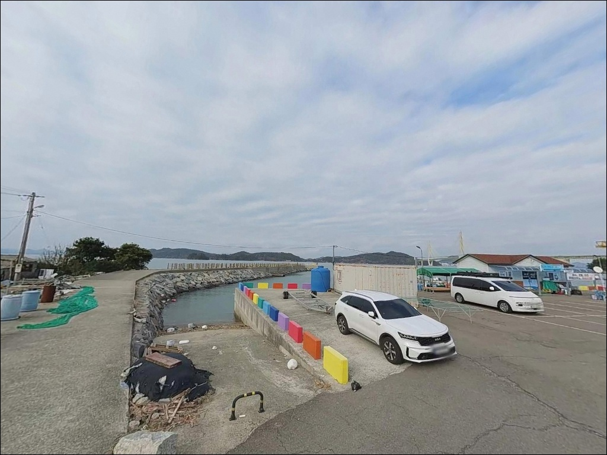

이 페이지에는 광고(제휴 링크 포함)가 있으며, 광고 링크를 통해 구매하면 운영자가 판매 수익 또는 수수료를 받을 수 있습니다. 포인트 사진: 카카오맵 스카이뷰·로드뷰. 이 페이지의 지도·사진 이미지는 카카오맵의 실제 서비스 이미지와 다를 수 있습니다.


거금도 금진항 릴찌낚시, 콧부리에서 조류 방향 따라 바꾼 공략 자리
포인트 안내
금진항
전남 고흥군 금산면 신촌리 334-21
거금대교를 건너자마자 마주치는 이 항구는
교각 바로 아래에서 소록도 방향 물골을 품고 있어
물때와 상관없이 조류가 꾸준히 흐르는 구조입니다.
들물과 썰물 방향 전환 때마다
콧부리 기준으로 자리를 옮기지 않으면
조류를 등지고 낚시하는 상황이 반복됩니다.
전남 고흥군 금산면 신촌리,
거금도 북쪽 끝자락에 자리한 금진항은
동방파제 95m, 서방파제 75m 규모의 지방어항입니다.
여객선이 접안하던 항구라 수심이 깊고,
소록도–거금도 사이 수로 구조가
릴찌·원투·에깅 세 가지 방식 모두를 수용하는
복합 포인트 조건을 만들어 줍니다.
이 글은
금진항의 진입 동선, 차박 여건,
조류 기반 낚시 자리 판단,
낚시 스타일별 공략 조건에 집중합니다.
조황 단정이나 특정 어종 보장은
이 글의 범위에 포함되지 않습니다.

1. 진입 동선과 포인트 접근성
거금대교를 건너면 바로 금진항 방향 분기점이 나옵니다.
진입로는 콘크리트 포장 2차선으로,
경사 없이 평탄하게 항구 내부까지 이어집니다.
항구 진입 난이도 자체는 낮은 편이며
승용차부터 SUV까지 큰 어려움 없이
방파제 바로 앞까지 차를 붙일 수 있습니다.
항내 광장 규모상 승용차와 소형 캠퍼 기준
회차가 가능한 공간이 확보되어 있습니다.
다만 대형 카라반이나 장축형 캠핑카는
진입 후 회차 공간이 제한될 수 있으므로
출발 전 위성지도로 항내 공간을 미리 확인하는 편이 좋습니다.
주차는 선착장 광장 뒤편 콘크리트 부지,
방파제 입구 도로변 공터,
항구 입구 낚시점 앞 소형 공터 세 곳이 후보입니다.
유람선 승하선 구역과 어선 계류 동선을
막지 않는 자리가 우선이며,
낚시 발판과 가장 가까운 구간은 선착장 광장 뒤편입니다.

2. 차박 환경과 야간 체류 여건
금진항은 거금대교 경관 조명과
항내 가로등이 결합된 구조라
야간에도 선착장 주변은 비교적 밝은 조도를 유지합니다.
강력한 헤드랜턴 없이도 이동에 문제가 없는 수준이며,
야간 낚시 환경 자체는 나쁘지 않습니다.
다만 방파제 선단부는 별도 조명이 없으므로
외항 쪽으로 이동할 때는 헤드랜턴을 챙겨야 합니다.
금산면 신촌리 일대는 민가와 상업시설이
어느 정도 혼재한 항구 마을 분위기입니다.
완전히 외딴 어촌이 아니므로
야간에도 간헐적인 차량 통행이 발생합니다.
주말 낮에는 거금 8경 유람선 이용객이 집중되는 구조라
차박 목적의 장시간 주차는 평일이나 야간이 적합합니다.
소록도–거금도 수로 방향에서 북서풍이
직접 들어오는 지형 구조입니다.
기상에 따라 외항 방면의 바람이 강해질 수 있으며,
이럴 때 내항 쪽 선착장 광장은
바람을 어느 정도 피할 수 있는
차박 대기 자리로 내항 선착장 뒤편이 더 유리합니다.


3. 주변 편의시설 및 인프라 현황
공중화장실이 항구 내에 설치되어 있습니다.
금진항 입구에는 낚시점이 운영 중이며
현지에서 미끼와 밑밥을 보충할 수 있습니다.
주유소는 항구에서 0.5~2km 거리 내에 위치하므로
연료 보급은 금진항 구간에서 해결 가능합니다.
24시간 편의점은 금진항 반경 3km 내에 없습니다.
녹동읍 시가지까지 거금대교와 소록대교를 건너
약 6~8km를 이동해야 편의점과 마트를 이용할 수 있습니다.
응급 상황 발생 시 종합병원급 의료 시설은
고흥읍 방면으로 약 30km 거리에 있으므로
비상약품과 식수는 출발 전 완비하는 것이 기본입니다.
연소해수욕장은 금진항에서 약 1.4km 거리에 위치해
낚시 외 시간을 보내는 장소로 활용이 가능합니다.
항 내부 공중화장실이 상시 개방되어 있어
장시간 체류 시 기본 위생 여건은 갖춰진 편입니다.

4. 출조 전 반드시 챙겨야 할 준비사항
금진항에서 가장 먼저 확인할 것은 물때입니다.
소록도–거금도 물골 구조는 조류가 항상 흐르는 특성이 있지만,
들물과 썰물 방향이 전환될 때마다
방파제 콧부리 기준으로 유리한 자리가 달라집니다.
바다타임에서 금산면 기준 물때를 확인하고
조류 방향과 세기를 입장 전에 먼저 판단하는 것이 기본입니다.
소록도 방향 물골에서 직접 바람이 들어오는 구조라
기상 변화가 빠른 날은 외항 파도가 빠르게 높아질 수 있습니다.
출조 당일 아침 기상청 해양 예보를 한 번 더 확인하고,
파고와 풍향을 체크한 뒤 입장 여부를 결정하는 것이 좋습니다.
방파제 릴찌낚시 특성상
막대찌 채비와 전유동 채비를 함께 준비하면
조류 세기에 따라 탄력적으로 대응이 가능합니다.
금진항은 유람선이 실제로 출항하는 항구입니다.
주말 낮 시간대에는 유람선 이용객과
관광객 동선이 방파제 인근과 겹칠 수 있습니다.
승하선 구역과 어선 계류 동선 주변에서의 낚시는 피하고,
낚싯줄·미끼 포장재는 반드시 개인 수거로 처리합니다.
구명조끼 착용과 야간 헤드랜턴 지참은 기본 조건입니다.

5. 조류를 알아야 보이는 금진항 낚시 지형
금진항 낚시의 핵심은 거금대교 교각 바로 아래,
소록도와 거금도가 마주 보는 협수로 구간입니다.
두 섬 사이에서 형성된 물골은
조류를 방파제 방향으로 집중시키는 구조라
어떤 물때에도 조류가 죽지 않는 환경을 만들어 줍니다.
회유성 어종이 이 물골을 따라 이동하는 패턴이 있어
포인트 자체의 기본 여건은 안정된 편입니다.
방파제 외항 기준 수심은
가까운 거리(20~30m)에서 6~7m,
50m 이상 거리에서 9~10m 수준으로 형성됩니다.
지방어항 규모에 비해 수심이 깊은 편이며,
간조 때도 포인트 수심이 유지되어
물때에 크게 구애받지 않고 낚시 자리를 유지할 수 있습니다.
내항 쪽은 어선 정박 구역을 피해
원투 자리가 따로 형성됩니다.
조류가 강할 때는 뻘물(탁수)이 형성되는 경우가 있습니다.
탁수 상태에서는 릴찌낚시 조과가 떨어지는 경향이 있으며,
이 경우 원투낚시로 전환해 바닥 어종을 노리는 방식이 현실적입니다.
방파제 선단 콧부리에서 조류가 흘러나오는 방향 쪽이
릴찌 채비가 가장 힘을 발휘하는 자리입니다.
출조 전에 금진항 일대 최신 조황을 반드시 검색해 보시기 바랍니다.


6. 포인트에 어울리는 낚시 스타일
이 포인트에서 가장 잘 맞는 낚시 스타일은
릴찌낚시입니다.
수심 6~10m 구간에 조류가 꾸준히 흐르는 구조는
막대찌 또는 전유동 채비를 활용해
조류를 따라 채비를 흘리기에 이상적인 조건입니다.
방파제 콧부리에서 외항 방향으로 흘리는 전유동 방식이
수심과 조류 모두를 활용할 수 있어 효율적입니다.
원투낚시도 이 포인트 구조에 잘 맞습니다.
내항 어선 정박 구역을 피한 자리에서
모래뻘 바닥 구간을 향해 멀리 던지면
붕장어와 바닥 어종을 기대해 볼 수 있습니다.
외항 방파제 발판이 넓어
멀티 대 운용이 가능한 여건도 원투낚시에 유리한 점입니다.
갑오징어 에깅도 여름 이후 시즌에 노려볼 만합니다.
거금도 전역이 갑오징어 포인트로 알려진 해역이며,
금진항 내항 수심과 외항 조류 조건은
갑오징어 서식에 적합한 환경을 갖추고 있습니다.
방파제 양쪽 이동이 가능한 구조 덕분에
조류 방향에 따라 내항·외항을 번갈아 탐색하는 에깅 패턴이 성립합니다.
야간에는 볼락 라이트게임도 선택지가 됩니다.
거금대교 교량 조명이 수면에 영향을 주는 구간에서
소형 지그헤드 채비로 방파제 주변을 천천히 탐색하면
볼락과 전갱이 반응을 기대해 볼 수 있는 여건입니다.
항만 조명 경계선 주변이 볼락 탐색의 기본 자리입니다.

7. 대안 포인트와 플랜 B 동선
금진항이 여의치 않을 때
가장 먼저 이동할 수 있는 대안은
소록대교 하단 방파제입니다.
거금대교를 건너 소록대교 방면으로 약 6~7km.
소록대교 아래 흰 등대 방파제는
릴찌낚시로 감성돔이 들어오는 고흥 대표 자리이며,
방파제 광장이 넓어 차박과 낚시를 동시에 운용하기 좋은 구조입니다.
거금도 안에서 대안을 찾는다면
신양선착장이 첫 번째 선택지입니다.
거금도 서쪽 금산면 신양리에 위치하며,
연홍도를 마주 보는 석축 선착장 좌우 전체가 낚시 발판입니다.
차량을 선착장 안까지 진입시킬 수 있고,
콧부리 주변 조류 흐름이 살아 있어
감성돔과 갑오징어 양쪽이 성립하는 포인트입니다.
차박 대안 지점을 찾는다면
연소해수욕장 주변 도로변과 주차 공간이 후보입니다.
금진항에서 약 1.4km 거리로,
해변 경관을 보며 차를 세울 수 있는 여건이 갖춰져 있습니다.
녹동항 일대는 편의점·마트·낚시점이 집중된 거점이므로
물품 보급과 낚시 정보 수집을 겸해 들르기 좋은 경유지입니다.

조류 방향을 읽으면
금진항이 달라 보입니다
릴찌낚시를 주력으로 하거나
갑오징어 에깅 시즌에 움직이는 낚시인이라면
금진항의 물골 구조는 조건이 잘 맞는 편입니다.
수심 6~10m에 조류가 꾸준히 흐르고,
방파제 양쪽 이동이 자유로운 구조 덕분에
들물·썰물 전환에 따라 유연하게 자리를 바꿀 수 있습니다.
공중화장실과 낚시점이 갖춰진 항구 조건은
가족 단위 차박낚시에도 부담이 적습니다.
반면 물때와 조류 방향을 확인하지 않고
무조건 방파제 선단에 자리를 잡으면
조류를 등진 채 채비가 흘러나가는 상황을
반복해서 맞닥뜨릴 수 있습니다.
물때 확인, 콧부리 기준 자리 선정, 조류 방향 파악,
이 세 가지를 갖추고 들어가면
기대 이상의 조건을 보여주는 포인트입니다.
거금대교 조명이 내려다보이는 항구에서
조류 소리를 들으며 하룻밤 머무는 여정이라면,
금진항은 낚시와 차박을 동시에 챙기기에
거금도에서 가장 접근성이 좋은 출발점입니다.